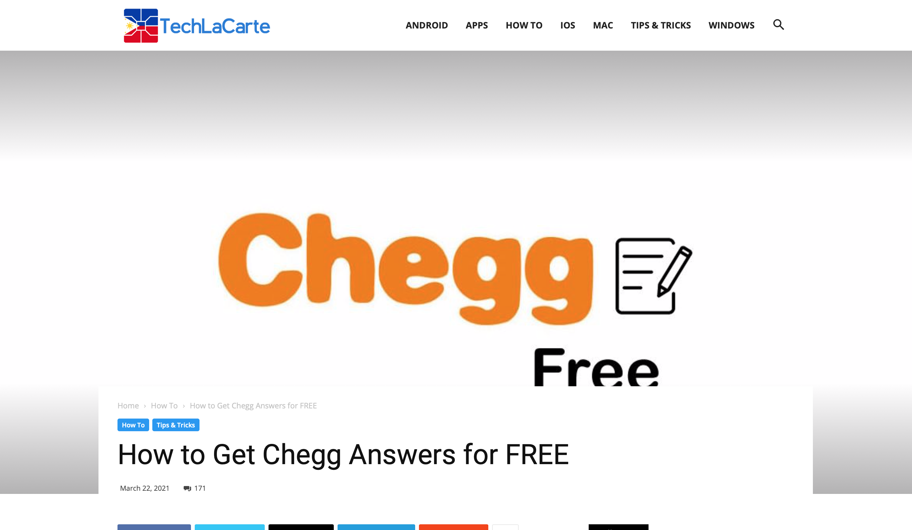
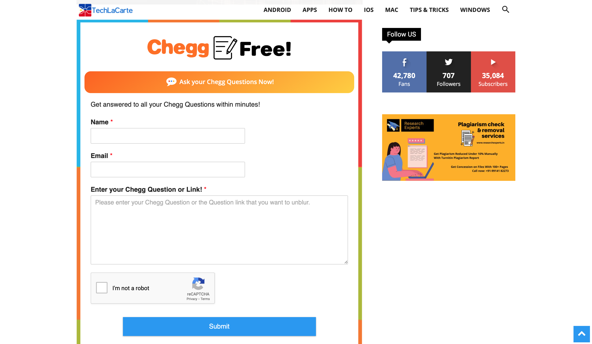
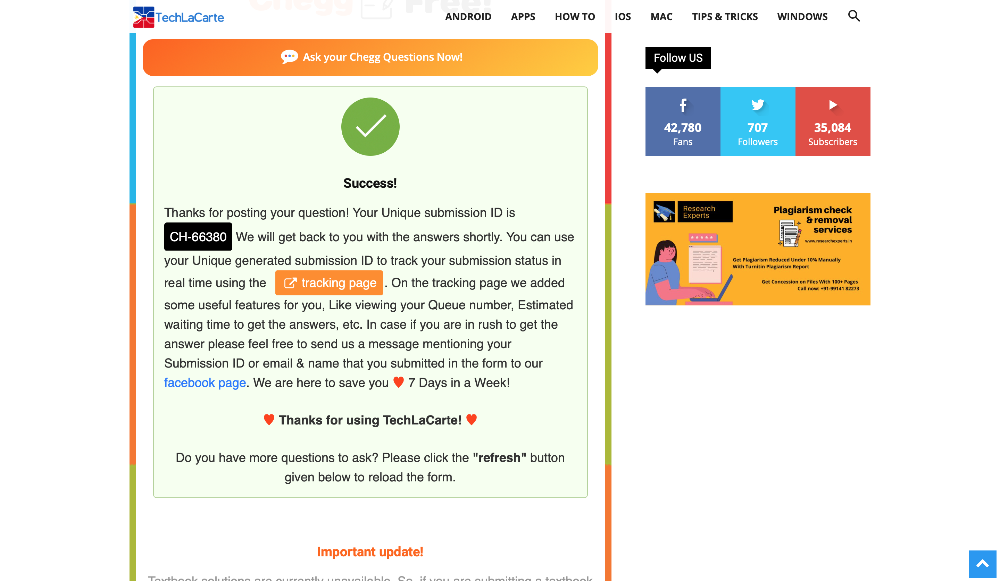
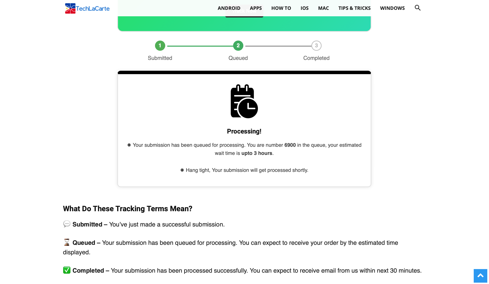
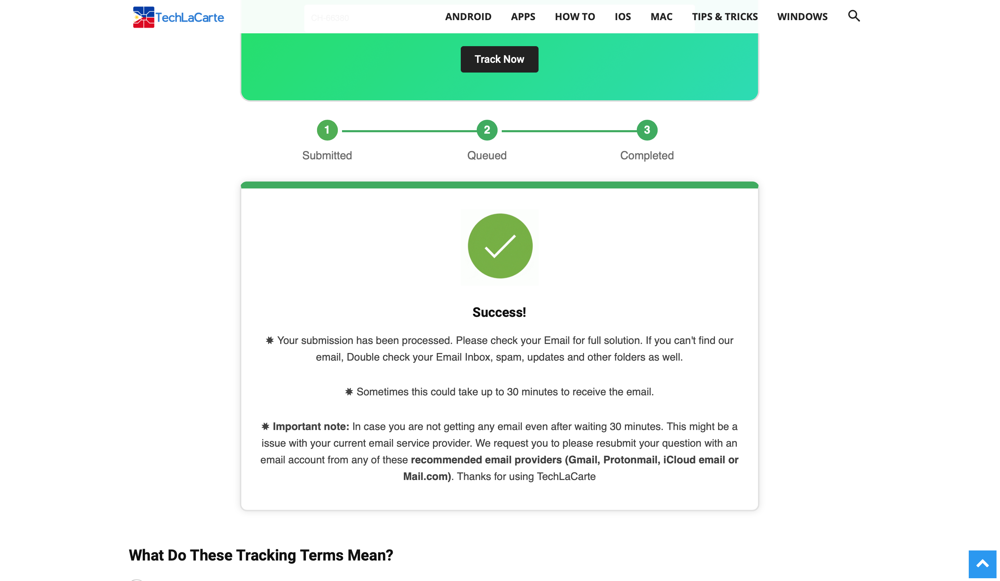

Introduction
Chegg, Inc., is an American education technology company based in Santa Clara, California. It provides digital and physical textbook rentals, textbook solutions, online tutoring, and other student services. The company was launched in 2005, and began trading publicly on the New York Stock Exchange in November 2013
Chegg also works as a freelancing website, as you can solve question for others and get paid.
Now back to the reason why you are here, as any piece of paid software or service, there is always a workaround to bypass the payment part, and in this article you will find out how to get Chegg answers for free.
Important
UPDATE: as of march 31 2021, the techlacarte method isnt shutdown by chegg, chegg has been recently taking down services that offer chegg answers for free, i have been searching for all the free methods i know and they are all shutdown by chegg themselves, i found this facebook group that gives you the answers for free, a full explination with steps on how ot use this method isnt needed because its too simple, first you need to join this facebook group (you must have a facebook account first), then when you get accepted to join the group, simply post the link of your question that you get from copying the link of the question you want the answer for directly from the chegg website(NOTE: if you write anything else other than the link on the post you will not get the answer), then you will have to wait a bit and a bot will reply to your post with the answer, if you have any answers you can ask me at .
An important thing to know about the sites which are letting you, view Chegg answers for free are considered as illegal but, you are 100% safe when using those sites to get free answers. Chegg is continuously taking actions on closing websites that illegally hosts their answers, in order to stop misusing their contents. This methods used in this article are working as of 2021, if any one of the methods mention stop working i will update this article to remove the method or put another method instead of it.
Solution
method not working as of march 31 2021 :( , because chegg themselves started shutting down services that offer free chegg answers, check above for the other workaround solution(its very simple)
Follow these steps is order to get answers from chegg for free.
the method that will be explained is very easy to use and doesnt require any knowledge in tech or any stuff related to tech, the steps are clearly explained with detail so follow carefully.
Step 1:
First go to techlacarte, you will see the following:

Step 2:
After you see the screen above, scroll down until you see this part of the website:

Step 3:
After you reach this part of the website, enter the following text fields:
Note
make sure your email is written 100% correct or else you wont get the answer.
After you've done all the steps you will see this screen:

Step 4:
After you get this success screen, you can do the following:
Step 5:
After clicking on the tracking page button you willl see the following:
Step 6:
After reaching this page click on the button, after clicking the button you will see this screen:

The screen shown above will tell you the remaining estimated time left for the asnwer to be sent to your email, it will usually take 30 minutes but at sometimes it may take longer depending on the que length, also keep on refreshing the page so you can see if the progress gets updated
Step 8:
When the time is finished and the question is sent to your email you will see a succses screen like this:

If you see this screen, go to your email and check for the solution, you will most likely not see the solution in the main inbox, so you will have to search the other mail boxes like spam.
Conclusion
these were all the steps needed to get chegg answers for free if you have any questions or faced any problems you can email us your problem at: toolsx.app@gmail.com